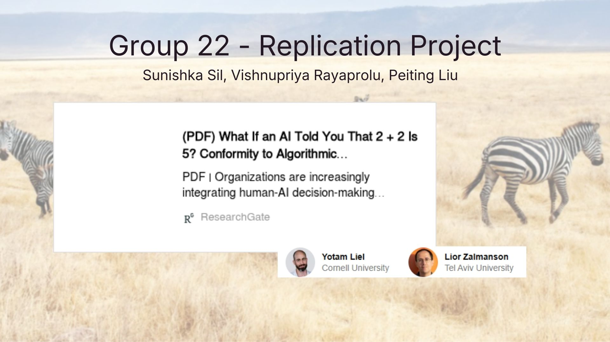
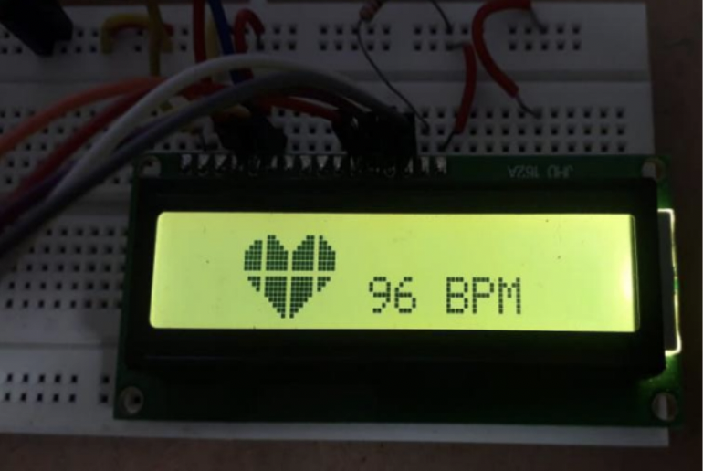

2025
2025
Aura, Accessible Shopping Assistant
An accessibility-focused platform for blind and low-vision users combining fabric scanning, haptic feedback, and a personalized digital closet to enable independent, nonvisual fashion exploration.
At Cornell Tech, I'm pursuing my master's in Information Systems with a concentration in Connective Media, where User Research and Product Strategy sit at the heart of everything I do. My background in Customer Experience AI and a drive to shape experiences that feel accessible, intuitive, and deeply customer-centric is what defines my work. Currently seeking Summer 2026 internships where I can bring that thinking to life.
2025
An accessibility-focused platform for blind and low-vision users combining fabric scanning, haptic feedback, and a personalized digital closet to enable independent, nonvisual fashion exploration.

2025A behavioral experiment (N=30) replicating Asch's conformity paradigm in a human-AI setting, revealing that hybrid human-AI social cues drive stronger conformity signals than either alone.

2019A portable, non-invasive heart rate monitoring system built on Arduino, measuring real-time BPM via pulse sensors and displaying results on an LCD interface, designed for accessible, cost-effective healthcare monitoring.

MS in Information Systems — Connective Media
GPA: 3.52
Related Coursework:
BS in Electronics and Telecommunication Engineering
GPA: 3.44
Relevant coursework: